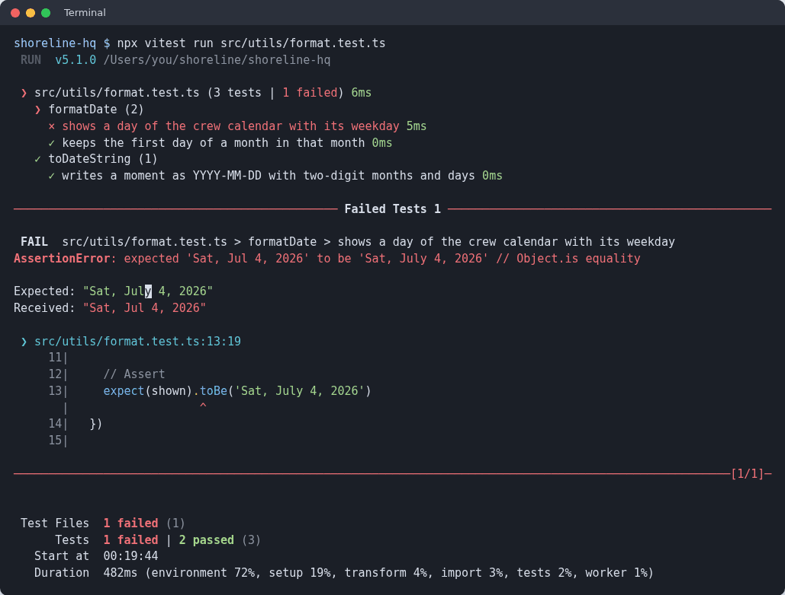

🧪 Lesson 9.1: Testing Components
At the end of the last lesson you wrote down three things in the HQ you would hate to break without noticing. Maybe a guest opening the impact report, or the error summary losing its focus, or "each kind of debris once" quietly letting bottles through twice. Right now the only thing standing guard is you, clicking through the app after every change, and you will not click through all of it every time. Today you hire a tireless helper: a test suite that checks those things in about a second, every time you save a file, and tells you exactly what broke and where.
🎯 Learning Objectives
By the end of this lesson, you will be able to:
- Explain what unit, component and end-to-end tests each check in the HQ, and why tests should describe what people see rather than how the code works inside
- Set up Vitest, jsdom and React Testing Library in a Vite project, sharing the app's own
vite.config.ts - Write unit tests for functions and Zod schemas with
describe,it,expect,it.eachand typed sample-data factories - Render components and find elements the way people do, by role and accessible name, choosing between
getBy,queryByandfindBy - Build a typed
renderWithProvidershelper (cache, sign-in, router) and reset the app's module-level state between tests - Read a failing test's output and decide whether the test or the app is wrong
📦 Code for this lesson
Starting code: lesson-29-start.zip · Finished code: lesson-29-end.zip. Each folder has a README with the commands to run it. The tests in this lesson never call shoreline-api, so npm test works without it.
In This Lesson
🛟 Why Tests, and Which Ones
An automated test is a small program that runs a piece of your app and checks the result: "formatDate('2026-07-04') is 'Sat, Jul 4, 2026'", or "a guest's header has three links". You write it once; a test runner runs all of them in a second or two, as often as you like. TypeScript already checks that your code fits together. Tests check that it does the right thing, which no type can say: that the duplicate message lands on row 3, not row 1.
💡 Mental model: the crew's kit check
Before every cleanup, the crew leader runs down the same list: first-aid kit, gloves in every size, bags, grabbers, sign-in sheet. It takes two minutes, it is boring on purpose, and it catches the missing first-aid kit in the parking lot instead of on the beach. A test suite is that list for your app: the same checks, in the same order, every time, so that a missing piece shows up at your desk instead of in front of the organizers.
Tests come in sizes. This module uses all three, and each one checks something the others cannot:
| Kind | What it runs | An HQ example | Where |
|---|---|---|---|
| Unit test | One function, with plain values in and out | impactReportSchema refuses an empty bags box instead of counting 0 | This lesson |
| Component test | One component (or a few), rendered into a pretend page | The header shows organizers a Volunteers link and guests none | This lesson and Lesson 9.2 |
| End-to-end test | The whole app in a real browser, against the real API | Maya signs in, reports today's impact and sees the new totals | Lesson 9.3 |
Small tests are fast and point straight at the broken line; big tests are slower but prove the pieces work together. Most of a healthy suite is unit and component tests, with a few end-to-end tests on the journeys that matter most. Whatever the size, one rule from React Testing Library's guiding principle runs through this module: test what people see and do, not how the code does it inside. A test that checks "the header has a Volunteers link" survives any rewrite of the header; a test that checks "the header called useAuth once" breaks the day you refactor, even though nothing a person sees has changed.
🌱 Why this matters
On most teams a pull request without tests for its change is not finished, and "how would you test this?" is a standard interview question. Tests are also what make big changes safe: you upgraded nothing today, but when React, React Router or the Compiler release a new version, your suite is how you find out in a minute whether the HQ still works. And testing is a skill that grows with practice: your first tests will feel slow to write, and that is normal. They get faster, and they start to change how you design code.
⚙️ Vitest in a Vite Project
Vitest is the test runner built for Vite: it reads the same vite.config.ts as npm run dev and npm run build, so your tests see the code exactly as the app does, CSS Modules, .ts imports and the React Compiler included. Its API (describe, it, expect) is the one most JavaScript test tools share, so what you learn here reads the same in other projects. Five packages make up today's toolkit:
| Package | What it gives you |
|---|---|
vitest | The runner: finds test files, runs them, prints the results, and watches for changes |
jsdom | A pretend browser page inside Node: document, elements, events, focus, localStorage. No real layout, no pictures, no network of its own |
@testing-library/react | render() puts a component into that page; cleanup() takes it out again |
@testing-library/dom | screen and the queries that find elements (getByRole and friends) |
@testing-library/jest-dom | Extra checks for elements: toBeInTheDocument(), toHaveAttribute(), toHaveFocus() |
The configuration is a test block in vite.config.ts:
/// <reference types="vitest/config" />
import react, { reactCompilerPreset } from '@vitejs/plugin-react'
import babel from '@rolldown/plugin-babel'
import { defineConfig } from 'vite'
// https://vite.dev/config/
export default defineConfig({
plugins: [
react(),
// The React Compiler: works out what each component can reuse between renders
babel({ presets: [reactCompilerPreset()] }),
],
// Vitest reads the same file, so tests run the code exactly as the app's build does
test: {
environment: 'jsdom',
setupFiles: ['./src/test/setup.ts'],
include: ['src/**/*.test.{ts,tsx}'],
},
})- The first line is a triple-slash directive: it tells TypeScript to load Vitest's types for the config, which add the
testkey to Vite'sdefineConfig. Without it,tsc -bdoes not know whattestis. environment: 'jsdom'gives every test file the pretend page. Without it, tests run in plain Node, where there is nodocumentto render into.setupFilesruns a file before each test file: the place for anything every test needs.includesays which files are tests: files ending in.test.tsor.test.tsxundersrc, next to the code they test. Lesson 9.3's browser tests will live in another folder, and this keeps Vitest out of them.- The plugins stay. Measured: a component imported in a test is the Compiler's output (printing
StatusBadgeinside a test shows the cache it adds,const $ = c(3)), so the tests check the code you ship, not a different build of it.
The setup file starts small:
// Runs before every test file (vite.config.ts → test.setupFiles)
import '@testing-library/jest-dom/vitest'
import { cleanup } from '@testing-library/react'
import { afterEach } from 'vitest'
afterEach(() => {
// Take the rendered components off the page, so each test starts with an empty one
cleanup()
})The first import adds jest-dom's checks to Vitest's expect (and their types, so tsc knows them). Note the /vitest at the end: the plain package name is for a different runner, and Common Mistakes shows what happens without it. The afterEach removes whatever a test rendered. React Testing Library does that by itself only when the test functions are globals; this project imports describe, it and expect from 'vitest' in each file instead (clearer, and the editor can see where they come from), so the setup file asks for the cleanup.
npm test runs Vitest in watch mode: it runs everything once, then waits, and runs the affected tests again each time you save a file. Press q to stop it. In a CI service (Lesson 10.2) the same command runs once and exits, because those services set a CI variable that Vitest notices; npx vitest run does the same on your machine.
✅ Your First Tests
Start where tests are easiest: a function with values in and a value out. formatDate from Lesson 3.4 is perfect, and it has a famous trap (the UTC day-before bug) that a test can pin down for good:
import { describe, expect, it } from 'vitest'
import { formatDate, toDateString } from './format.ts'
describe('formatDate', () => {
it('shows a day of the crew calendar with its weekday', () => {
// Arrange: a date as the API sends it
const date = '2026-07-04'
// Act
const shown = formatDate(date)
// Assert
expect(shown).toBe('Sat, Jul 4, 2026')
})
it('keeps the first day of a month in that month', () => {
expect(formatDate('2026-03-01')).toBe('Sun, Mar 1, 2026')
})
})
describe('toDateString', () => {
it('writes a moment as YYYY-MM-DD with two-digit months and days', () => {
expect(toDateString(new Date(2026, 0, 5, 9, 30))).toBe('2026-01-05')
})
})| Part | What it does |
|---|---|
describe(name, fn) | Groups tests under a heading (usually the function or component's name) |
it(name, fn) | One test. The name finishes the sentence "it…", so the output reads as a list of facts |
expect(value) | Starts a check; a matcher such as .toBe(expected) finishes it. A failed check stops the test and marks it failed |
The first test spells out the three parts most tests have, Arrange, Act, Assert: set up the input, run the code, check the result. Short tests often fit all three on one line, like the second one. The file sits next to format.ts and imports it with the same .ts extension as any other file in the app; it is TypeScript too, so tsc -b checks it along with everything else.
Run npm test:
Expected output
> shoreline-hq@0.0.0 test
> vitest
DEV v5.1.0 /Users/you/shoreline/shoreline-hq
✓ src/utils/format.test.ts (3 tests) 3ms
✓ formatDate (2)
✓ shows a day of the crew calendar with its weekday 1ms
✓ keeps the first day of a month in that month 0ms
✓ toDateString (1)
✓ writes a moment as YYYY-MM-DD with two-digit months and days 0ms
Test Files 1 passed (1)
Tests 3 passed (3)
Start at 00:28:13
Duration 640ms (environment 53%, transform 34%, setup 11%, import 2%)
PASS Waiting for file changes...
press h to show help, press q to quitThree green checks. Now make it fail on purpose, the most useful habit in testing: a test you have never seen fail might not be testing anything. Change 'Sat, Jul 4, 2026' to 'Sat, July 4, 2026' and save. Watch mode runs it again:

Read it top to bottom, like a TypeScript error: which test (the describe and it names joined with >), what was expected, what was received (the differing letter highlighted), and the line with a caret under the check. Then ask the question every failure deserves: is the test wrong, or the app? Here the app writes short month names on purpose, so the test is wrong. Put Jul back. A red test is information, not a verdict on you.
Matchers you will use most
| Matcher | Passes when |
|---|---|
toBe(x) | The value is x (Object.is): for strings, numbers, booleans and the very same object |
toEqual(x) | The value has the same contents as x: for objects and arrays ({ kind: 'full' } is never toBe another { kind: 'full' }) |
toHaveLength(n) | An array or string has n items or characters |
toContain(x) | An array includes x (or a string includes the text) |
.not. | Turns any matcher around: expect(list).not.toContain('Volunteers') |
Typed sample data
Most HQ functions take a whole CleanupEvent: fifteen properties. Writing all fifteen in every test buries the one that matters, and leaving some out is a type error. A factory solves both: it returns a complete, valid object, and the test passes only the parts it is about:
/** A scheduled cleanup with 12 spots, 5 of them taken */
export function makeEvent(changes: Partial<CleanupEvent> = {}): CleanupEvent {
return {
id: 'e17',
title: 'Tide Pool Morning Cleanup',
siteId: 'otter-creek',
status: 'scheduled',
date: '2026-07-04',
startTime: '08:00',
endTime: '10:30',
capacity: 12,
spotsTaken: 5,
meetingPoint: 'Gravel pull-out on Highway 1',
description: 'We clear trash caught in the willows and along the creek banks. Expect mud.',
suppliesProvided: ['gloves', 'bags'],
leadOrganizerId: 'v03',
createdAt: '2026-06-01T16:00:00.000Z',
updatedAt: '2026-06-01T16:00:00.000Z',
...changes,
}
}Partial<CleanupEvent> (Lesson 2.4) makes every property optional, so makeEvent({ spotsTaken: 18 }) is fine, and the spread puts the changes over the defaults. The types still guard you: makeEvent({ status: 'finished' }) or makeEvent({ capacity: '12' }) is a tsc error, so sample data can never drift from the API's shape. With it, tests read like the rules they check:
import { describe, expect, it } from 'vitest'
import { makeEvent } from '../test/factories.ts'
import { getAvailability } from './availability.ts'
describe('getAvailability', () => {
it('counts the spots left on a scheduled cleanup', () => {
const event = makeEvent({ capacity: 12, spotsTaken: 5 })
expect(getAvailability(event)).toEqual({ kind: 'open', spotsLeft: 7 })
})
it('says full when every spot is taken', () => {
expect(getAvailability(makeEvent({ capacity: 18, spotsTaken: 18 }))).toEqual({ kind: 'full' })
})
it.each(['draft', 'completed', 'cancelled'] as const)('takes no sign-ups for a %s cleanup', (status) => {
expect(getAvailability(makeEvent({ status }))).toEqual({ kind: 'closed' })
})
})it.each(list) runs one test per item, and %s in the name is replaced by the item, so the output lists "takes no sign-ups for a draft cleanup", "…for a completed cleanup" and so on. as const matters here: it keeps the items as the literal types 'draft' | 'completed' | 'cancelled'. Without it they would be plain strings, and passing a string as status to makeEvent is the same TS2322 you met in Lesson 2.2.
🔍 Finding Things the Way People Do
A component test renders a component into jsdom's page and then looks at the page. render(element) does the first part; screen is the whole page, with a query for every way of finding an element. Here is the error summary from Lesson 8.2, tested:
import { render, screen } from '@testing-library/react'
import { describe, expect, it } from 'vitest'
import { ErrorSummary } from './ErrorSummary.tsx'
const twoProblems = [
{ id: 'bags', message: 'Bags must be a whole number from 0 to 500.' },
{ id: 'items.1.count', message: 'Row 2: Count must be a whole number from 0 to 100000.' },
]
describe('ErrorSummary', () => {
it('names the number of problems and takes the focus', () => {
render(<ErrorSummary errors={twoProblems} />)
const summary = screen.getByRole('region', { name: 'Fix these 2 before saving' })
expect(summary).toHaveFocus()
})
it('links each problem to its field', () => {
render(<ErrorSummary errors={twoProblems} />)
const link = screen.getByRole('link', { name: 'Row 2: Count must be a whole number from 0 to 100000.' })
expect(link).toHaveAttribute('href', '#items.1.count')
expect(screen.getAllByRole('link')).toHaveLength(2)
})
it('says "this" for a single problem', () => {
render(<ErrorSummary errors={twoProblems.slice(0, 1)} />)
expect(screen.getByRole('heading', { name: 'Fix this before saving' })).toBeInTheDocument()
})
it('shows nothing when there is nothing to fix', () => {
const { container } = render(<ErrorSummary errors={[]} />)
expect(container).toBeEmptyDOMElement()
expect(screen.queryByRole('region')).not.toBeInTheDocument()
})
})Look at how the elements are found: getByRole('region', { name: 'Fix these 2 before saving' }), getByRole('link', { name: … }), getByRole('heading', …). A role is what an element is to assistive technology (a section with a name is a region, an a href is a link), and the name is what a screen reader announces with it. It is the same information you gave the browser in Lesson 3.6 for accessibility, and that is the point: if a test can find "the link named Row 2…", so can a screen reader user. A query that cannot find something is often an accessibility bug.
Testing Library suggests an order for choosing a query:
| Prefer | Query | For |
|---|---|---|
| 1 | getByRole(role, { name }) | Almost everything: buttons, links, headings, form fields, regions, lists |
| 2 | getByLabelText(text) | Form fields, by their label (Lesson 9.2's forms) |
| 3 | getByText(text) | Text that is not interactive: a paragraph, a badge |
| Last | getByTestId(id) | Only when nothing a person can perceive identifies it (needs a data-testid in the markup) |
Each query also comes in three variants, chosen by what you expect:
| Variant | Returns | When nothing matches | Use it to say… |
|---|---|---|---|
getBy… | The element | Throws, printing the page | "This is here now" (the everyday choice) |
queryBy… | The element or null | Returns null | "This is not here": expect(screen.queryByRole('region')).not.toBeInTheDocument() |
findBy… | A Promise of the element | Waits (1 second by default), then rejects | "This will appear soon", after data loads (Lesson 9.2) |
Add All (getAllByRole) to get an array of every match. When more than one element matches a getBy, that is an error too: it forces you to be specific. And the types follow: getByRole returns HTMLElement, queryByRole returns HTMLElement | null, so TypeScript reminds you that a queryBy result may be missing.
Reading a query's error
The best part of role queries is what they say when they fail. While writing the EventCard test for this lesson, this check failed, against Lesson 8.2's card:
const button = screen.getByRole('button', { name: 'Show details for Tide Pool Morning Cleanup' })Expected output (shortened)
FAIL src/components/EventCard.test.tsx > EventCard > has a details button named after the cleanup, closed at first
TestingLibraryElementError: Unable to find an accessible element with the role "button" and name "Show details for Tide Pool Morning Cleanup"
Here are the accessible roles:
...
button:
Name "Show detailsfor Tide Pool Morning Cleanup":The error lists every role on the page with its name, and there it is: "Show detailsfor". The card wrote Show details<VisuallyHidden> for …</VisuallyHidden>, with the space at the start of the hidden text. Chromium keeps that space (the rts browser checks have found "Show details for…" since Lesson 3.6), but the accessibility-name code Testing Library uses drops it, and the rules for spaces in accessible names leave room for tools to differ. Which one is right? Both are reading the same markup, and the safe fix is to put the space where nobody can lose it: outside the hidden text, {' '}<VisuallyHidden>for …. Step 5 makes that change in the card and in the three other places the HQ uses the same pattern. The test did its job: it found a fragile spot nobody had noticed.
jest-dom's checks
| Matcher | Checks |
|---|---|
toBeInTheDocument() | The element is on the page (mostly with .not and queryBy) |
toHaveAttribute(name, value?) | href, aria-expanded, aria-current and any other attribute |
toHaveFocus() | The element is document.activeElement |
toHaveTextContent(text) | The element's text includes text |
toBeEmptyDOMElement() | The element has no content (a component that rendered null) |
toContainElement(el) | One element is inside another |
🧰 A Typed Render Helper
The error summary needs nothing around it. Most HQ components do: EventCard's title is a React Router Link, the header asks useAuth() who is signed in, and pages read the TanStack Query cache. Render EventCard on its own and it crashes (Common Mistakes has the message). In the app, App.tsx puts the providers around everything; tests need the same, in one place, typed:
// Render a component the way the app shows it: inside the cache, the sign-in state and a router
import { QueryClientProvider } from '@tanstack/react-query'
import { render } from '@testing-library/react'
import type { ReactElement } from 'react'
import { createMemoryRouter } from 'react-router'
import { RouterProvider } from 'react-router/dom'
import { saveSession, type Session } from '../api/client.ts'
import { queryClient } from '../api/queries.ts'
import { AuthProvider } from '../auth/AuthProvider.tsx'
export interface RenderOptions {
/** The address the test starts at (default '/') */
route?: string
/** The route pattern the component is shown at, for useParams (default: the same as route) */
path?: string
/** Who is signed in (default: nobody) */
session?: Session | null
}
export function renderWithProviders(
ui: ReactElement,
{ route = '/', path = route, session = null }: RenderOptions = {},
) {
saveSession(session)
// A router that keeps its history in memory: no browser address bar needed
const router = createMemoryRouter([{ path, element: ui }], { initialEntries: [route] })
const result = render(
<QueryClientProvider client={queryClient}>
<AuthProvider>
<RouterProvider router={router} />
</AuthProvider>
</QueryClientProvider>,
)
return { ...result, router }
}- The cache: the app's own
queryClient, because the HQ's loaders and mutations import that one object (Lesson 7.2). A test can put an answer in it before rendering (Exercise 2). - The sign-in state: the session lives in
client.ts(Lesson 6.3), so the helper saves the test's session there before rendering, andAuthProviderreads it as it would in the browser. - The router:
createMemoryRouteriscreateBrowserRouter's twin that keeps its history in memory instead of the address bar. The component is the element of one route;routeis the address the test starts at, andpaththe pattern ('/events/:eventId') when a component readsuseParams. - The types:
RenderOptionsdocuments each option, and every one is optional with a default, sorenderWithProviders(<Header />)is a guest on the home page. The result is everythingrenderreturns plus the router (Lesson 9.2 uses it to check where a click went). TypeScript infers that return type; hoverrenderWithProvidersto see it.
Module state needs a reset
Each test file gets a fresh copy of the app's modules, but the tests inside a file share them. The HQ keeps state in modules on purpose: the query cache, the session store in client.ts, and the Zustand display store (Lesson 7.3). A test that switches the lists to compact, or signs Maya in, would leave that behind for the next test, and the next test would pass or fail depending on the order. So the setup file puts each piece back after every test:
// Runs before every test file (vite.config.ts → test.setupFiles)
import '@testing-library/jest-dom/vitest'
import { cleanup } from '@testing-library/react'
import { afterEach } from 'vitest'
import { saveSession } from '../api/client.ts'
import { queryClient } from '../api/queries.ts'
import { useUiStore } from '../state/uiStore.ts'
afterEach(() => {
// Take the rendered components off the page, so each test starts with an empty one
cleanup()
// The app keeps state in modules, outside React: put each piece back the way the app starts
queryClient.clear()
saveSession(null)
useUiStore.setState(useUiStore.getInitialState())
localStorage.clear()
sessionStorage.clear()
})getInitialState() is Zustand's record of the store as it was created, so the reset does not need to repeat the defaults. The storage is cleared too, because the session and the display settings are saved there and would be read back. Lesson 9.2 adds one more line here when the mock API arrives.
With the helper, the header's rules for each kind of visitor are three short tests. within(element) runs queries inside one part of the page, here the navigation named Main:
import { screen, within } from '@testing-library/react'
import { describe, expect, it } from 'vitest'
import { organizer, volunteer } from '../test/factories.ts'
import { renderWithProviders } from '../test/render.tsx'
import { Header } from './Header.tsx'
// The names of the links in the main navigation, in order
function navLinks(): string[] {
const nav = screen.getByRole('navigation', { name: 'Main' })
return within(nav)
.getAllByRole('link')
.map((link) => link.textContent)
}
describe('Header', () => {
it('shows guests three pages and a way to sign in', () => {
renderWithProviders(<Header />)
expect(navLinks()).toEqual(['Events', 'Sites', 'Impact'])
expect(screen.getByRole('link', { name: 'Sign in' })).toHaveAttribute('href', '/sign-in')
})
it('adds the crew list for organizers and says who is signed in', () => {
renderWithProviders(<Header />, { session: organizer })
expect(navLinks()).toEqual(['Events', 'Sites', 'Impact', 'Volunteers'])
expect(screen.getByText('Maya Okafor (Organizer)')).toBeInTheDocument()
expect(screen.getByRole('button', { name: 'Sign out' })).toBeInTheDocument()
})
it('keeps the crew list from volunteers', () => {
renderWithProviders(<Header />, { session: volunteer })
expect(navLinks()).not.toContain('Volunteers')
expect(screen.getByText('Theo Nakamura (Volunteer)')).toBeInTheDocument()
})
it('marks the page you are on', () => {
renderWithProviders(<Header />, { route: '/impact' })
expect(screen.getByRole('link', { name: 'Impact' })).toHaveAttribute('aria-current', 'page')
})
})organizer and volunteer are two typed Session objects in factories.ts; the last test starts the router at /impact and checks NavLink's aria-current="page", the attribute your header's CSS styles (Lesson 6.1).
⚠️ Common Mistakes
⚠️ Importing jest-dom without /vitest
Older guides (and the course's own old pages) write import '@testing-library/jest-dom'. With Vitest, measured, it fails twice. tsc -b does not know the matchers:
Expected output (first of many)
src/components/ErrorSummary.test.tsx:15:21 - error TS2339: Property 'toHaveFocus' does not exist on type 'Assertion<void, HTMLElement>'.
15 expect(summary).toHaveFocus()
~~~~~~~~~~~and every test file fails before a single test runs, because that entry point expects a global expect that this project does not have:
Expected output (shortened)
ReferenceError: expect is not defined
❯ node_modules/@testing-library/jest-dom/dist/index.mjs:10:1
❯ src/test/setup.ts:2:1
1| // Runs before every test file (vite.config.ts → test.setupFiles)
2| import '@testing-library/jest-dom'
| ^
3| import { cleanup } from '@testing-library/react'
4| import { afterEach } from 'vitest'
...
Test Files 7 failed (7)
Tests no testsUse import '@testing-library/jest-dom/vitest': it adds the matchers to Vitest's expect and their types to tsc.
⚠️ Forgetting the cleanup
Measured with cleanup() commented out: 8 of the 29 tests failed, because every render added another copy of the component to the same page:
Expected output (shortened)
FAIL src/components/ErrorSummary.test.tsx > ErrorSummary > links each problem to its field
TestingLibraryElementError: Found multiple elements with the role "link" and name "Row 2: Count must be a whole number from 0 to 100000."
...
Test Files 3 failed | 4 passed (7)
Tests 8 failed | 21 passed (29)"Found multiple elements" in a test that worked alone is the sign. Keep cleanup() in afterEach (or turn on Vitest's globals, which lets Testing Library register it itself).
⚠️ State that leaks from one test into the next
Measured without the display store's reset: the compact-lists test passed, and the next test, which expects the roomy card, failed. Nothing was wrong with either test:
Expected output (shortened)
× shows supplies in roomy lists (the store was reset after the last test) 7ms
...
FAIL src/components/EventCard.test.tsx > EventCard > shows supplies in roomy lists (the store was reset after the last test)
TestingLibraryElementError: Unable to find an element with the text: We bring: gloves, bags. This could be because the text is broken up by multiple elements. In this case, you can provide a function for your text matcher to make your matcher more flexible.
...
Test Files 1 failed | 6 passed (7)
Tests 1 failed | 28 passed (29)A test that passes alone and fails with the others (or the other way round) almost always means shared state. Find what the earlier test changed and reset it in afterEach, as setup.ts does for the cache, the session and the store.
⚠️ Rendering a component without its providers
render(<EventCard event={makeEvent()} site={makeSite()} />)Measured: plain render of the card fails inside React Router's Link, with a message that does not mention routers at all:
Expected output (shortened)
FAIL src/components/NoRouter.test.tsx > links the title to the cleanup page
TypeError: Cannot destructure property 'basename' of 'React$1.useContext(...)' as it is null.
❯ LinkWithRef node_modules/react-router/dist/development/lib/dom/lib.js:288:8"Cannot destructure property … of useContext(…) as it is null" means a component asked for a context nobody provided. The stack's second line names the component (LinkWithRef, React Router's Link). Use renderWithProviders. (The header without AuthProvider gives a much clearer message, because useAuth() throws one on purpose, Lesson 5.2.)
⚠️ getBy to check that something is not there
expect(screen.getByText(/Expect mud/)).not.toBeInTheDocument()Measured: the test fails although the description really is hidden, because getByText throws before expect even runs:
Expected output (shortened)
FAIL src/components/Absent.test.tsx > hides the description at first
TestingLibraryElementError: Unable to find an element with the text: /Expect mud/. This could be because the text is broken up by multiple elements. In this case, you can provide a function for your text matcher to make your matcher more flexible.For "not there", use queryBy…, which returns null: expect(screen.queryByText(/Expect mud/)).not.toBeInTheDocument().
🛠️ Project: The HQ's First Test Suite
Step 1 installs and configures the tools, Step 2 writes and breaks the first test, Step 3 adds the unit tests, Step 4 the first component test, Step 5 the render helper and the tests that need it (with the accessible-name fix), and Step 6 runs everything. You do not need shoreline-api or the dev server today: close them if they are running, and keep one terminal in shoreline-hq for npm test.
Step 1: Install and configure (10 min)
In shoreline-hq, install the five packages as development dependencies (they are for you, not for the app's visitors, so they never reach the bundle):
npm install --save-dev vitest jsdom @testing-library/react @testing-library/dom @testing-library/jest-domExpected output
added 65 packages, and audited 150 packages in 4s
32 packages are looking for funding
run `npm fund` for details
found 0 vulnerabilitiesThe course was checked with Vitest 5.1.0, jsdom 31.0.0, React Testing Library 16.3.3, @testing-library/dom 10.4.2 and jest-dom 7.0.1; newer patch versions are fine. In vite.config.ts, add the first line and the test block from "Vitest in a Vite Project":
+/// <reference types="vitest/config" />
import react, { reactCompilerPreset } from '@vitejs/plugin-react'
import babel from '@rolldown/plugin-babel' babel({ presets: [reactCompilerPreset()] }),
],
+ // Vitest reads the same file, so tests run the code exactly as the app's build does
+ test: {
+ environment: 'jsdom',
+ setupFiles: ['./src/test/setup.ts'],
+ include: ['src/**/*.test.{ts,tsx}'],
+ },
})In package.json, add a test script (mind the comma after the preview line):
"build": "tsc -b && vite build",
"lint": "oxlint",
- "preview": "vite preview"
+ "preview": "vite preview",
+ "test": "vitest"
},
"dependencies": {Create the folder src/test and in it setup.ts with the first version from that section (the one that only imports jest-dom and calls cleanup()). Step 5 adds the resets.
Step 2: The first test, and the first failure (8 min)
Create src/utils/format.test.ts with the code from "Your First Tests" and run:
npm testYou should see the three passing tests and "Waiting for file changes". Leave it running for the rest of the lesson. Change Jul to July in the first test, save, and read the failure (it is the picture in that section). Put Jul back and save: green again. Try one more break on the app's side: in format.ts, change month: 'short' to month: 'long' and save. Now two tests fail, and this time the test is right; undo the change.
Step 3: Unit tests for the rules (14 min)
Create src/test/factories.ts:
// Sample data for tests: complete, correctly typed objects. A test passes only the parts it is about.
import type { Session } from '../api/client.ts'
import type { CleanupEvent, Site } from '../api/types.ts'
/** A scheduled cleanup with 12 spots, 5 of them taken */
export function makeEvent(changes: Partial<CleanupEvent> = {}): CleanupEvent {
return {
id: 'e17',
title: 'Tide Pool Morning Cleanup',
siteId: 'otter-creek',
status: 'scheduled',
date: '2026-07-04',
startTime: '08:00',
endTime: '10:30',
capacity: 12,
spotsTaken: 5,
meetingPoint: 'Gravel pull-out on Highway 1',
description: 'We clear trash caught in the willows and along the creek banks. Expect mud.',
suppliesProvided: ['gloves', 'bags'],
leadOrganizerId: 'v03',
createdAt: '2026-06-01T16:00:00.000Z',
updatedAt: '2026-06-01T16:00:00.000Z',
...changes,
}
}
/** Otter Creek Mouth, one of the six beach sites */
export function makeSite(changes: Partial<Site> = {}): Site {
return {
id: 'otter-creek',
name: 'Otter Creek Mouth',
town: 'Seal Rock',
terrain: 'mixed',
accessible: false,
latitude: 36.979,
longitude: -122.1183,
parking: 'Gravel pull-out on Highway 1 (12 spaces).',
description: 'Where the creek meets the ocean.',
image: {
url: 'http://localhost:4000/images/sites/otter-creek.jpg',
alt: 'A creek flowing out of green willows across the beach into the ocean, with low hills behind.',
width: 1200,
height: 675,
},
...changes,
}
}
/** Maya, signed in as an organizer */
export const organizer: Session = {
token: 'test-organizer',
user: { id: 'v01', name: 'Maya Okafor', email: 'maya.okafor@example.com', role: 'organizer' },
}
/** Theo, signed in as a volunteer */
export const volunteer: Session = {
token: 'test-volunteer',
user: { id: 'v04', name: 'Theo Nakamura', email: 'theo.nakamura@example.com', role: 'volunteer' },
}The sessions use the API's people (Maya is an organizer, Theo a volunteer) with made-up tokens: these tests never reach the API. Now create src/utils/availability.test.ts with the code from "Typed sample data". Next, the impact report's schema from Lesson 8.2, the place where "bottles counted twice" would slip through. Create src/api/schemas.test.ts:
import { describe, expect, it } from 'vitest'
import { impactReportSchema, type ImpactFormValues } from './schemas.ts'
// A report as an organizer types it: every value is text
function typedReport(changes: Partial<ImpactFormValues> = {}): ImpactFormValues {
return {
volunteersAttended: '11',
bags: '6',
weightKg: '18.5',
items: [{ category: 'plastic-bottles', count: '40' }],
notes: '',
...changes,
}
}
// Each problem the schema finds, as "path: message"
function problems(values: ImpactFormValues): string[] {
const result = impactReportSchema.safeParse(values)
return result.success ? [] : result.error.issues.map((issue) => `${issue.path.join('.')}: ${issue.message}`)
}
describe('impactReportSchema', () => {
it('turns the typed text into numbers', () => {
const result = impactReportSchema.parse(typedReport())
expect(result).toEqual({
volunteersAttended: 11,
bags: 6,
weightKg: 18.5,
items: [{ category: 'plastic-bottles', count: 40 }],
notes: '',
})
})
it('refuses an empty box instead of counting it as 0', () => {
expect(problems(typedReport({ bags: '' }))).toEqual([
'bags: Bags must be a whole number from 0 to 500.',
])
})
it('refuses half a bag', () => {
expect(problems(typedReport({ bags: '2.5' }))).toHaveLength(1)
})
it('puts the duplicate message on the repeated row, even while a count is wrong', () => {
const items: ImpactFormValues['items'] = [
{ category: 'plastic-bottles', count: '40' },
{ category: 'plastic-bags', count: 'lots' },
{ category: 'plastic-bottles', count: '3' },
]
expect(problems(typedReport({ items }))).toEqual([
'items.1.count: Count must be a whole number from 0 to 100000.',
'items.2.category: Plastic bottles is already in the list: add to its count.',
])
})
})typedReportandproblemsare small typed helpers for this file: a valid report as an organizer types it (text), and every issue as one readable"path: message"string. Comparing strings makes a failure easy to read.- The test names are the rules from Lesson 8.2: "an empty box is a message, not 0", "the duplicate message goes on the repeated row, even while a count is wrong" (that is the
whenoption). ImpactFormValues['items']is an indexed access type: the type of one property of another type. The array is typed before it is used, so eachcategorykeeps its literal type.
Last, the walker behind the error summary. Create src/utils/formErrors.test.ts:
import type { FieldErrors } from 'react-hook-form'
import { describe, expect, it } from 'vitest'
import type { ImpactFormValues } from '../api/schemas.ts'
import { listErrors } from './formErrors.ts'
import { withRowNumbers } from './impactForm.ts'
// What React Hook Form's formState.errors holds after a failed save: a tree shaped like the values
const errors: FieldErrors<ImpactFormValues> = {
bags: { type: 'invalid_format', message: 'Bags must be a whole number from 0 to 500.' },
items: [
undefined,
{ count: { type: 'invalid_format', message: 'Count must be a whole number from 0 to 100000.' } },
],
root: { server: { type: 'server', message: 'Not saved.' } },
}
describe('listErrors', () => {
it('lists every field message with its path as the id, without the root errors', () => {
expect(listErrors(errors)).toEqual([
{ id: 'bags', message: 'Bags must be a whole number from 0 to 500.' },
{ id: 'items.1.count', message: 'Count must be a whole number from 0 to 100000.' },
])
})
it('gives an empty list when there are no errors', () => {
expect(listErrors({})).toEqual([])
})
})
describe('withRowNumbers', () => {
it('starts each debris row message with its row number, counting from 1', () => {
expect(withRowNumbers(listErrors(errors))).toEqual([
{ id: 'bags', message: 'Bags must be a whole number from 0 to 500.' },
{ id: 'items.1.count', message: 'Row 2: Count must be a whole number from 0 to 100000.' },
])
})
})The errors object is typed as React Hook Form's own FieldErrors<ImpactFormValues>, so it can only be a tree the real form could produce. The watch window should now show:
Expected output (from npx vitest run; watch mode shows the same list)
RUN v5.1.0 /Users/you/shoreline/shoreline-hq
✓ src/utils/format.test.ts (3 tests) 3ms
✓ src/utils/formErrors.test.ts (3 tests) 4ms
✓ src/utils/availability.test.ts (5 tests) 4ms
✓ src/api/schemas.test.ts (4 tests) 7ms
Test Files 4 passed (4)
Tests 15 passed (15)
Start at 00:28:31
Duration 542ms (environment 72%, setup 20%, import 4%, transform 3%, tests 1%, worker 1%)Step 4: The first component test (8 min)
Create src/components/ErrorSummary.test.tsx with the code from "Finding Things the Way People Do" (a .tsx file, because it contains JSX). Five files and 19 tests should pass. Then prove one of them can fail: in ErrorSummary.tsx, comment out the line summaryRef.current?.focus() and save. The focus test fails, and its message shows the summary under "Expected element with focus" and the page's <body> under "Received", which is exactly the accessibility promise Lesson 8.2 made. Undo the change.
Step 5: The render helper, the card and the header (15 min)
Create src/test/render.tsx with the helper from "A Typed Render Helper", and replace the contents of src/test/setup.ts with the version that resets the cache, the session and the store (also in that section). Then the card's tests. Create src/components/EventCard.test.tsx:
import { screen } from '@testing-library/react'
import { describe, expect, it } from 'vitest'
import { useUiStore } from '../state/uiStore.ts'
import { makeEvent, makeSite } from '../test/factories.ts'
import { renderWithProviders } from '../test/render.tsx'
import { EventCard } from './EventCard.tsx'
describe('EventCard', () => {
it('links the title to the cleanup page', () => {
renderWithProviders(<EventCard event={makeEvent()} site={makeSite()} />)
const link = screen.getByRole('link', { name: 'Tide Pool Morning Cleanup' })
expect(link).toHaveAttribute('href', '/events/e17')
expect(screen.getByRole('heading', { level: 3 })).toContainElement(link)
})
it('shows the date, the status, the meeting point and the spots left', () => {
renderWithProviders(<EventCard event={makeEvent()} site={makeSite()} />)
expect(screen.getByText('Sat, Jul 4, 2026')).toBeInTheDocument()
expect(screen.getByText('Scheduled')).toBeInTheDocument()
expect(screen.getByText('Otter Creek Mouth: Gravel pull-out on Highway 1')).toBeInTheDocument()
expect(screen.getByText('7 of 12 spots left')).toBeInTheDocument()
})
it('says when the site is not known yet', () => {
renderWithProviders(<EventCard event={makeEvent()} site={undefined} />)
expect(screen.getByText(/^Site to be confirmed/)).toBeInTheDocument()
})
it('has a details button named after the cleanup, closed at first', () => {
renderWithProviders(<EventCard event={makeEvent()} site={makeSite()} />)
const button = screen.getByRole('button', { name: 'Show details for Tide Pool Morning Cleanup' })
expect(button).toHaveAttribute('aria-expanded', 'false')
expect(screen.queryByText(/Expect mud/)).not.toBeInTheDocument()
})
it('leaves out the meeting point and supplies in compact lists', () => {
useUiStore.getState().setDensity('compact')
renderWithProviders(<EventCard event={makeEvent()} site={makeSite()} />)
expect(screen.queryByText(/Gravel pull-out/)).not.toBeInTheDocument()
expect(screen.queryByText(/We bring/)).not.toBeInTheDocument()
})
it('shows supplies in roomy lists (the store was reset after the last test)', () => {
renderWithProviders(<EventCard event={makeEvent()} site={makeSite()} />)
expect(screen.getByText('We bring: gloves, bags')).toBeInTheDocument()
})
})The compact test changes the display store directly with useUiStore.getState().setDensity('compact'), the same action the radio buttons call; the reset in setup.ts is why the last test sees roomy lists again. Save: the button test fails with the "Show detailsfor" message from "Reading a query's error". Fix the card in src/components/EventCard.tsx:
)}
<div className={styles.actions}>
+ {/* The space before the hidden text stays outside it: some tools drop a space at its start */}
<Button
variant="link" onClick={() => setShowDetails((shown) => !shown)}
>
- {showDetails ? 'Hide details' : 'Show details'}
- <VisuallyHidden> for {event.title}</VisuallyHidden>
+ {showDetails ? 'Hide details' : 'Show details'}{' '}
+ <VisuallyHidden>for {event.title}</VisuallyHidden>
</Button>
</div>The same pattern is in three more files that Lesson 9.2 will test. Fix them now, one line each. In src/components/RosterTable.tsx:
onClick={() => onMark(signupId, mark === 'attended' ? undefined : 'attended')}
>
- Check in<VisuallyHidden> for {entry.volunteer.name}</VisuallyHidden>
+ Check in{' '}<VisuallyHidden>for {entry.volunteer.name}</VisuallyHidden>
</Button>
<Button onClick={() => onMark(signupId, mark === 'no-show' ? undefined : 'no-show')}
>
- No-show<VisuallyHidden> for {entry.volunteer.name}</VisuallyHidden>
+ No-show{' '}<VisuallyHidden>for {entry.volunteer.name}</VisuallyHidden>
</Button>
</td>In src/components/PhotoUpload.tsx:
<span>{photo.name}</span>
<Button variant="link" onClick={() => onRemove(photo.id)}>
- Remove<VisuallyHidden> {photo.name}</VisuallyHidden>
+ Remove{' '}<VisuallyHidden>{photo.name}</VisuallyHidden>
</Button>
</li>And in src/components/ImpactReportForm.tsx:
</div>
<Button variant="link" onClick={() => removeRow(index)}>
- Remove<VisuallyHidden> row {index + 1}</VisuallyHidden>
+ Remove{' '}<VisuallyHidden>row {index + 1}</VisuallyHidden>
</Button>
</li>({' '} is how JSX writes a space that a line break would otherwise swallow.) Nothing changes on screen, and the names in the browser stay "Check in for Diego Herrera" and "Remove row 1". Finally, create src/components/Header.test.tsx with the code from "A Typed Render Helper".
Step 6: Run everything (5 min)
Stop watch mode with q and run the whole suite once, then the usual checks:
npx vitest run
npx tsc -b
npm run lint
npm run build
Expected output
RUN v5.1.0 /Users/you/shoreline/shoreline-hq
✓ src/utils/formErrors.test.ts (3 tests) 4ms
✓ src/utils/availability.test.ts (5 tests) 5ms
✓ src/utils/format.test.ts (3 tests) 4ms
✓ src/api/schemas.test.ts (4 tests) 8ms
✓ src/components/ErrorSummary.test.tsx (4 tests) 66ms
✓ src/components/Header.test.tsx (4 tests) 83ms
✓ src/components/EventCard.test.tsx (6 tests) 79ms
Test Files 7 passed (7)
Tests 29 passed (29)
Start at 00:28:11
Duration 706ms (environment 65%, setup 19%, tests 7%, import 5%, transform 4%, worker 1%)
> shoreline-hq@0.0.0 lint
> oxlint
Found 0 warnings and 0 errors.
Finished in 15ms on 84 files with 150 rules using 20 threads.
> shoreline-hq@0.0.0 build
> tsc -b && vite build
vite v8.3.8 building client environment for production...
✓ 351 modules transformed.
computing gzip size...
dist/index.html 0.46 kB │ gzip: 0.30 kB
dist/assets/outfit-latin-ext-wght-normal-DdQaqQDo.woff2 14.80 kB
dist/assets/outfit-latin-wght-normal-Bc-8i84L.woff2 32.29 kB
dist/assets/index-CatUgjh8.css 11.06 kB │ gzip: 3.08 kB
dist/assets/index-CRveR_rM.js 581.59 kB │ gzip: 182.28 kB
[plugin builtin:vite-reporter]
(!) Some chunks are larger than 500 kB after minification. Consider:
- Using dynamic import() to code-split the application
- Use build.rolldownOptions.output.codeSplitting to improve chunking: https://rolldown.rs/reference/OutputOptions.codeSplitting
- Adjust chunk size limit for this warning via build.chunkSizeWarningLimit.
✓ built in 1.32sThe files may finish in a different order on your machine, and your times and hashes will differ. tsc prints nothing: it checked the tests too, since they live in src. The build still has 351 modules and 581.59 kB of JavaScript, within a few bytes of Lesson 8.2's (the four spaces): nothing under src/test or in a .test file is imported by the app, so none of it reaches the bundle.
✅ Project Completion Checklist
- Vitest, jsdom and Testing Library are installed as dev dependencies, configured in
vite.config.ts, andnpm testruns them in watch mode src/test/setup.tsloads jest-dom for Vitest, cleans up, and resets the cache, the session, the display store and storage after each testfactories.tsandrender.tsxgive every test typed sample data and the app's providers- Unit tests cover
formatDate,getAvailability,impactReportSchema,listErrorsandwithRowNumbers - Component tests find the error summary, the event card and the header by role and name
- Buttons with hidden text keep their space outside it, and all 29 tests pass
npx tsc -bandnpm run lintpass with no errors or warnings, andnpm run buildsucceeds
Your own project: for the app you will plan in Lesson 11.1, write your three "would hate to break" items as test names, each one a sentence that starts with a verb ("refuses…", "shows…", "keeps…"). Next to each, write which kind of test it needs (unit, component or end-to-end) and what sample data the test would need: that list is the start of your factories file.
🏋️ Hands-on Exercises
Exercises 1 and 2 are part of the lesson (about 12 minutes together, included in the lesson time). Exercise 3 is an optional stretch, not counted in the lesson time.
🏋️ Exercise 1: Test the check-in desk's undo history
Write src/reducers/rosterReducer.test.ts for Lesson 7.2's rosterReducer: saved changes are remembered newest last, undone forgets the newest, undo on an empty history changes nothing, and the reducer never changes the state it was given.
💡 Hint
A reducer is a function like any other: call it with a state and an action and check what it returns. Type the sample changes as Change (exported by the reducer file). For "never changes the state it was given", keep the old state in a variable and check it afterwards; not.toBe proves the reducer returned a new object.
✅ Solution
import { describe, expect, it } from 'vitest'
import { initialRoster, rosterReducer, type Change } from './rosterReducer.ts'
const checkedIn: Change = { signupId: 's088', before: undefined }
const noShow: Change = { signupId: 's089', before: 'attended' }
describe('rosterReducer', () => {
it('remembers saved changes, newest last', () => {
const once = rosterReducer(initialRoster, { type: 'saved', change: checkedIn })
const twice = rosterReducer(once, { type: 'saved', change: noShow })
expect(twice.history).toEqual([checkedIn, noShow])
})
it('forgets the newest change on undo', () => {
const state = { history: [checkedIn, noShow] }
expect(rosterReducer(state, { type: 'undone' })).toEqual({ history: [checkedIn] })
})
it('never changes the state it was given', () => {
const before = { history: [checkedIn] }
const after = rosterReducer(before, { type: 'saved', change: noShow })
expect(after).not.toBe(before)
expect(before.history).toEqual([checkedIn])
})
it('does nothing on undo with an empty history', () => {
expect(rosterReducer(initialRoster, { type: 'undone' })).toEqual({ history: [] })
})
})Expected output
✓ src/reducers/rosterReducer.test.ts (4 tests) 4ms
✓ rosterReducer (4)
✓ remembers saved changes, newest last 2ms
✓ forgets the newest change on undo 0ms
✓ never changes the state it was given 0ms
✓ does nothing on undo with an empty history 0msType-checks and lints cleanly; the course's code continues without it.
🏋️ Exercise 2: A report already in the cache
ImpactSummary reads a cleanup's impact report with useSuspenseQuery. Test it without any API: put a report in the cache first, then render it, and check the totals line and that the debris list starts with the biggest count. Add a makeImpactReport factory to factories.ts.
💡 Hint
queryClient.setQueryData(eventImpactQuery('e01').queryKey, report) stores an answer where the component will look. When the data is already there, useSuspenseQuery does not suspend, so the summary renders at once. The reset in setup.ts clears it afterwards. getAllByRole('listitem') returns the list's items in order.
✅ Solution
The factory (in factories.ts; add ImpactReport to its type import):
/** A saved impact report for a completed cleanup */
export function makeImpactReport(changes: Partial<ImpactReport> = {}): ImpactReport {
return {
eventId: 'e01',
volunteersAttended: 12,
bags: 6,
weightKg: 18.5,
items: [
{ category: 'plastic-bags', count: 120 },
{ category: 'plastic-bottles', count: 40 },
],
notes: '',
photoIds: [],
submittedAt: '2026-06-02T19:00:00.000Z',
...changes,
}
}And src/components/ImpactSummary.test.tsx:
import { screen } from '@testing-library/react'
import { describe, expect, it } from 'vitest'
import { eventImpactQuery, queryClient } from '../api/queries.ts'
import { makeImpactReport } from '../test/factories.ts'
import { renderWithProviders } from '../test/render.tsx'
import { ImpactSummary } from './ImpactSummary.tsx'
describe('ImpactSummary', () => {
it('shows a report that is already in the cache, biggest count first', () => {
// The key carries the type: TypeScript checks that this really is an ImpactReport
queryClient.setQueryData(eventImpactQuery('e01').queryKey, makeImpactReport())
renderWithProviders(<ImpactSummary eventId="e01" />)
expect(screen.getByText('Volunteers: 12. Bags: 6. Weight: 18.5 kg.')).toBeInTheDocument()
const counts = screen.getAllByRole('listitem').map((item) => item.textContent)
expect(counts).toEqual(['Plastic bags: 120', 'Plastic bottles: 40'])
})
it('counts the photos instead of showing them', () => {
const report = makeImpactReport({ photoIds: ['p1', 'p2'] })
queryClient.setQueryData(eventImpactQuery('e01').queryKey, report)
renderWithProviders(<ImpactSummary eventId="e01" />)
expect(screen.getByText('Photos uploaded with the report: 2.')).toBeInTheDocument()
})
})Measured: both tests pass, and the key's type guards the sample data. Seeding { ...makeImpactReport(), weightKg: '18.5' } is a compile error, because eventImpactQuery's key carries the type ImpactReport (Lesson 7.1):
Expected output
src/components/ImpactSummary.test.tsx:6:87 - error TS2322: Type 'string' is not assignable to type 'number'.
6 queryClient.setQueryData(eventImpactQuery('e01').queryKey, { ...makeImpactReport(), weightKg: '18.5' })
~~~~~~~~
Found 1 error in src/components/ImpactSummary.test.tsx:6Vitest itself would have run that test happily: like Node in Lesson 1.1, it removes the types without checking them. That is why tsc -b (and npm run build) still matter when the tests are green. Type-checks and lints cleanly; not in the course's code.
🏋️ Exercise 3 (Stretch): Test a rule that depends on today
Optional stretch, not counted in the lesson time. canReportImpact (Lesson 8.2) allows a report on the day of a scheduled cleanup or later. Test it for a fixed "today", so the test gives the same answer on any day you run it.
💡 Hint
vi.useFakeTimers({ now }) sets the clock that new Date() reads. But impactForm.ts reads today's date once, when the module is first loaded, so set the clock first, then load the module: vi.resetModules() and await import('./impactForm.ts'). Give the clock back with vi.useRealTimers() in afterEach.
✅ Solution
import { afterEach, describe, expect, it, vi } from 'vitest'
import { makeEvent } from '../test/factories.ts'
// impactForm.ts reads today's date once, when it is first imported: set the clock, THEN import it
async function loadOn(now: Date) {
vi.useFakeTimers({ now })
vi.resetModules()
return import('./impactForm.ts')
}
afterEach(() => {
vi.useRealTimers()
})
describe('canReportImpact', () => {
it('allows a report from the morning of the cleanup', async () => {
const { canReportImpact } = await loadOn(new Date(2026, 6, 4, 11, 0))
expect(canReportImpact(makeEvent({ date: '2026-07-04' }))).toBe(true)
})
it('refuses a report the day before', async () => {
const { canReportImpact } = await loadOn(new Date(2026, 6, 3, 23, 30))
expect(canReportImpact(makeEvent({ date: '2026-07-04' }))).toBe(false)
})
it('allows a completed cleanup and never a cancelled one, whatever the date', async () => {
const { canReportImpact } = await loadOn(new Date(2026, 6, 4, 11, 0))
expect(canReportImpact(makeEvent({ status: 'completed', date: '2026-08-01' }))).toBe(true)
expect(canReportImpact(makeEvent({ status: 'cancelled', date: '2026-07-01' }))).toBe(false)
})
})Measured: all three pass. Without the fake clock, "refuses a report the day before" fails on any real date after the sample one, which is exactly the kind of test that passes today and breaks next week. The awkward import order is a hint about the code, too: a function that took today as a parameter would be easier to test. Type-checks and lints cleanly; not in the course's code.
🎯 Quick Quiz
🎯 Check Your Understanding
Question 1: Which check best follows "test what people see and do"?
Question 2: A test checks that the error summary is gone after every field is fixed. Which line?
Question 3: The compact-lists test passes, and the roomy-lists test after it fails, but passes when run alone. What is the most likely cause?
Question 4: A teammate writes queryClient.setQueryData(eventImpactQuery('e01').queryKey, { bags: 6 }) in a test. What happens?
Question 5: getByRole('button', { name: 'Show details for Tide Pool Morning Cleanup' }) failed, and the error listed a button named "Show detailsfor Tide Pool Morning Cleanup". What was the right response?
❓ Common Questions at This Stage
How many tests should I write? Should I aim for 100% coverage?
Write tests for what would hurt if it broke: rules (schemas, availability, guards), things that are easy to break by accident (focus, names, who sees what), and every bug you fix (a test that fails before the fix and passes after it keeps the bug from coming back). Coverage, the share of lines a test ran, is a useful map of what is not tested, but 100% is not the goal: a line can run without anything checking its result. Vitest can measure it with npx vitest run --coverage once you install its coverage package; it asks you to install it the first time.
Why not test that EventCard receives the right props, or check its state?
Because people never see props or state, only what the component draws. Testing Library deliberately has no way to read a component's state: you render it, look at the page, and (from Lesson 9.2) use it like a person would. That keeps tests working through refactors such as Lesson 7.2's move of the check-in marks from the reducer to the cache, which changed the internals completely and nothing a person sees.
Should the tests live next to the code or in a separate tests folder?
Both work; this course puts each test next to its file (EventCard.tsx and EventCard.test.tsx), which keeps them easy to find and makes a missing test obvious. Shared test code lives in src/test. Whatever you choose, the include pattern in vite.config.ts must match it.
jsdom is not a real browser. Can I trust these tests?
For what they check, yes: the HTML, roles, names, attributes, focus and events. jsdom has no layout, so it cannot tell you that a button is hidden behind another one, that a page overflows on a phone, or what a color looks like, and today's space-in-a-name finding showed that small details can differ from Chromium. That is what Lesson 9.3's end-to-end tests in a real browser are for, and why the course's browser checks keep running alongside.
I have seen tests with jest.fn() and import React from 'react'. Are those wrong?
They are from Jest, an older runner with almost the same API, and from before React's automatic JSX runtime. In Vitest the helpers live on vi (vi.fn(), vi.useFakeTimers(), Exercise 3), and JSX needs no React import. When you copy a test from older material, those two are usually the only changes.
🌟 Going Further: Bonus Challenge
Write src/components/StatusBadge.test.tsx with one it.each that covers all four statuses and their labels (Draft, Scheduled, Completed, Cancelled), using a typed table: it.each<[EventStatus, string]>([…]). Then try Vitest's browser interface: npx vitest --ui offers to install @vitest/ui and opens a page that lists every test, its output and the module graph. Finally, find the HQ's next "would hate to break" item that needs no clicking (nextCategory returning undefined when all ten kinds are listed is a good one) and test it.
📓 Learning Journal
Take five to ten minutes and jot down:
- Key concepts you learned today
- Techniques that clicked (and the ones that have not, yet)
- Questions or confusion to look up or bring to the next session
- Ideas to try on your own
- Progress and feelings: how did this lesson go for you?
✍️ This lesson's prompt: Today a test failed three ways: once because the test was wrong (July), once because the app was wrong (month: 'long'), and once because it found something nobody knew about (the missing space). For each, write how you could tell which kind it was. Then look at your three "would hate to break" items from the last lesson: which ones do today's tests cover, and which need clicking (Lesson 9.2) or a real browser (Lesson 9.3)?
📝 Lesson Summary
🎓 Key Takeaways
- Tests check behavior that types cannot; unit tests check functions, component tests check what a component draws, end-to-end tests check the whole app in a browser
- Vitest reads
vite.config.ts, so tests run the same plugins as the app (the React Compiler included); jsdom gives them a pretend page, and the setup file loads@testing-library/jest-dom/vitest describe,itandexpectwith Arrange, Act, Assert;toBefor single values,toEqualfor objects and arrays; see every test fail once- Typed factories (
Partial<T>over complete defaults) keep sample data short and always the right shape - Find elements by role and accessible name first;
getByfor "here now",queryByfor "not here",findByfor "soon" - A render helper puts the app's providers around a component; module state (cache, session, stores, storage) is reset after every test
- Vitest strips types without checking them:
tsc -bis still what checks your tests' types
| If you want to… | Go to |
|---|---|
| Review roles, names and accessible components | Lesson 3.6: Styling and Accessible Components |
| Review the impact schema and the error summary | Lesson 8.2: Complex Forms |
| Look up React patterns quickly | React Cheat Sheet |
| Choose the right query | testing-library.com: About Queries |
🏆 What You've Accomplished
- The HQ has a test suite: 29 tests that run in about a second, every time you save
- The impact schema's rules, the error list and the date formatting are pinned down by unit tests
- You tested components the way people meet them, by role and name, with a typed helper that gives them the app's providers
- Your tests found a real fragile spot in the accessible names of buttons in four components, and you fixed it
- You can read a failing test and tell whether the test, the app or something unexpected is wrong
🔭 Looking Ahead
Today's tests looked at components but never touched them, and they never needed the API. Real use is clicking, typing and waiting for answers. In Lesson 9.2: Interactions and Async you add user-event to click and type like a person, and MSW 3 to answer the HQ's requests with shoreline-api's own code inside the tests, then test the forms, the uploads, the optimistic check-in and the guards that keep guests out.
📋 Before the Next Lesson
- Make sure
npx vitest run,npx tsc -bandnpm run lintall pass - Click through the impact report form once and write down every place you type, click or wait for the API: those are Lesson 9.2's tests
- Add your three test names and their sample data to your Lesson 11.1 notes
🌱 Encouragement for the Journey
Writing tests can feel like writing the app twice, and the first ones are slow: a new vocabulary, a new error format, and a pretend page you cannot see. That feeling fades quickly. You already caught a real accessibility problem with your fifth test file, and from now on every change you make to the HQ gets checked in a second. Developers who test well are not the ones who never break things; they are the ones who find out first. That is you now.